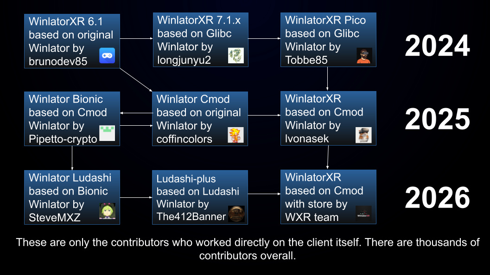

|
WinlatorXR is a next-generation Windows compatibility environment
built specifically for Extended Reality (XR). It enables users to run full Windows
applications and games inside immersive VR and AR spaces—bringing the power of
desktop software into a spatial, interactive world.
Designed for performance and flexibility, WinlatorXR bridges the gap between
traditional Windows programs and modern XR headsets. Whether you're launching
productivity tools, creative software, or classic PC games, WinlatorXR transforms
them into immersive experiences optimized for virtual environments.
- Run Windows Apps in XR – Seamlessly execute desktop software inside virtual and mixed reality spaces.
- Optimized Performance – Engineered for smooth rendering and low latency in XR hardware environments.
- Gaming in VR – Play compatible Windows PC titles within immersive virtual displays.
- Developer-Friendly – Built with compatibility and extensibility in mind.
|
Supported headsets
Although the Quest 3 and Quest 3 S remain the most popular headsets for running WinlatorXR, our compatibility extends well beyond Meta’s ecosystem. The Pico 4 Ultra, for example, is a strong alternative. Thanks to its Turnip driver support, it can deliver slightly better performance than the Quest 3 in many scenarios. Surprisingly, the older Meta Quest 2 continues to perform admirably. With the Turnip driver enabled, it offers full compatibility and often works far better than expected for a device of its generation. OpenGL games require full graphics driver support, specifically the Turnip driver. While DirectX 12 games may launch without Turnip, they are likely to suffer from severe graphical glitches.
We’ve benefited from community contributions. A developer from Play for Dream kindly added support for the Play for Dream MR headset. While this support remains in the project, we cannot guarantee long-term reliability, as we do not have access to the hardware for continuous testing.
| Headset |
Compatibility |
Notes |
| Oculus Quest 1 |
Not working |
The device is not OpenXR compliant |
| Oculus Quest 2 |
Fully supported |
All major drivers and wrappers are supported |
| Meta Quest 3/3s |
Supported |
Limited driver and wrapper support |
| Pico Neo 2 |
Community fork |
openlyst/WinlatorXR-pvr
|
| Pico Neo 3 |
Working, broken UI |
Limited driver and wrapper support, UI density bug |
| Pico 4 |
Supported |
Limited driver and wrapper support |
| Pico 4 Ultra |
Fully supported |
All major drivers and wrappers are supported |
| Play for Dream MR |
Partially working |
Unable to turn off passthrough, limited performance |
Credits
WinlatorXR
- Luboš V. develops the XR integration for the project.
- Bigelowed integrates WinlatorXR API into several projects.
- GmoLargey does the testing and creates tutorials.
- Tobbe85 ported the project to Pico headsets.
- EasonZxp ported the project to Play for Dream headsets.
- No1 takes care of SideQuest listing and updates.
Special thanks to Amanda Watson for writing a tutorial on developing hybrid (2D/VR) applications. That knowledge was unavailable elsewhere, and this project would not have been possible without it.
Winlator Cmod (which is WinlatorXR based on)
Third-Party Applications
History
Project Background
Between 2022 and 2024, the lead developer of WinlatorXR
focused extensively on advancing immersive emulation for standalone VR headsets.
In 2022, he introduced PPSSPP VR, bringing stereoscopic 3D rendering
and head tracking to classic handheld titles. In 2023, he revived the
VirtualGoBoy emulator, making it working on newer Android versions.
Continuing this trajectory in 2024, he contributed to CitraVR
by implementing an immersive mode that significantly enhanced
Nintendo 3DS emulation within VR environments. Together, these projects
demonstrated a consistent effort to expand VR-native emulation and improve
spatial presence across multiple platforms.
After discovering the Winlator project, the developer immediately
recognized its potential and initiated contact to explore the integration of
OpenXR support. The objective was to enable standardized VR runtime
compatibility and extend immersive capabilities within the Windows container
environment. However, the original repository proved challenging for external open-source
collaboration. Limited flexibility for community contributions led to the
creation of multiple independent forks and mods of the project.
These forks focused on experimentation, feature expansion, and improved
integration paths, ultimately contributing to the growth and diversification
of the ecosystem surrounding the project.
Project Evolution
Initially, there was no intention to create an independent fork or modification of WinlatorXR.
The project existed as part of the official Winlator repository, with the goal of contributing
VR functionality directly upstream. However, frequent Quest OS updates repeatedly broke
compatibility, and the time required to implement hotfixes proved to be too long for a
stable and reliable development cycle. Over time, it became clear that relying solely on
the original repository structure was not a sustainable solution.
The emergence of the GLIBC fork marked a significant turning point. This fork delivered
a substantial performance improvement, and its maintainer — a Chinese student developer —
quickly granted administrative access to the lead developer. This collaboration proved
to be mutually beneficial and accelerated development. Unfortunately, the original
maintainer later disappeared from the internet, leaving the project without consistent
upstream updates or long-term maintenance.
Meanwhile, Tobbe85 introduced a separate fork that added support for Pico headsets.
This broadened hardware compatibility and brought increased visibility to the project.
Around the same time, GmoLargey became heavily involved as a primary tester of early
WinlatorXR builds, providing valuable feedback and helping refine stability and
performance during critical development stages.
In the summer of 2025, the release of Winlator Cmod/Bionic resolved long-standing
issues related to Meta Quest drivers and unlocked compatibility with DirectX 9
and newer titles. This development represented a major breakthrough. The lead
developer merged these improvements together with Tobbe85’s work, effectively
rebooting the project and establishing a stronger, more unified foundation for
future WinlatorXR development.
In 2026, WinlatorXR received a major UI overhaul designed specifically for XR headsets,
making the entire experience far more intuitive and accessible for both new and experienced
users. The redesigned interface focused on easier navigation in virtual environments,
improved controller support, cleaner menus, and faster access to game libraries
and system settings while inside XR.
The platform also introduced several powerful integrations that significantly expanded
compatibility and immersion. Support for ReShade with 3D enhancements allowed users to
improve visuals and depth effects in supported games, while integration with OpenTrack
enabled more advanced head and motion tracking features for XR gameplay.
One of the biggest milestones for WinlatorXR in 2026 was the integration of major digital
storefronts, including Amazon Games, Epic Games Store, GOG, and Valve Corporation Steam.
This became a major turning point for the platform, as users could now browse, install,
and manage their PC game libraries directly through a unified experience without relying
on complicated manual setup processes. The streamlined integration dramatically reduced
friction for players and made downloading and launching games in XR much easier.
